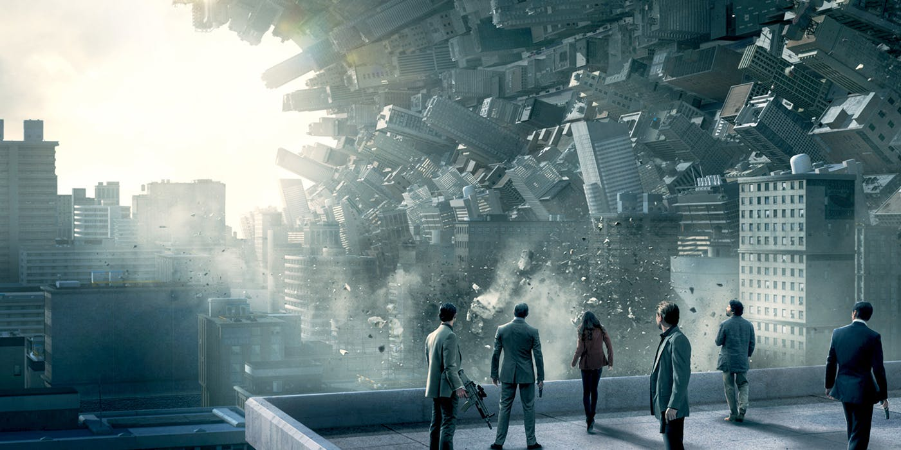

.png)

《潛行凶間》結局是現實還是夢,以及「觀眾心態」的反思
看了《潛行凶間》後，那個充滿疑惑的結局過去數天都在我腦中浮現，原因不是我有些地方想不通，而是「想不透」。這電影的英文原名是「Inception」，意指「植入」，這個主題貫穿整個故事，坦白說我真接受不了誇張又功利（譯名都可當廣告）的港式譯名手法，哈哈！最近在facebook上看到很多朋友說Inception好正好睇，還有他／她們對結尾的疑惑：「是現實定還是夢？」。那我就說少少關於我對《潛》的看法，還有作為觀眾一些反思吧！
夢與潛意識
先說說夢和潛意識的關係吧！做夢，對人類來說是一件平常事，而有時做過的夢，在腦中也只會是曇花一現，很易被忘記。潛意識(subconscious) ，在社會科學和哲學中是十分麻煩的概念，麻煩在於定義不一、麻煩在於關乎我們事件的認知(perception)，麻煩在於涉及到人類慾望的產生，不過呢，最最最簡單的定義可以一些我們不能意識到的行為動機，它會「潛而默化」地控制我們的思想。事實上，夢與潛意識的關係早在百多年前已是著名心理學家弗洛依德(Sigmund Freud,1856~1939年)作為心理分析的研究領域，他著有《夢的解析》、《玩笑與潛意識的關係》等，他指潛意識會在夢中表現出來，但我們記得的夢只佔整體的一少部分。在真實的日常生活中，潛意識除了在夢中表現出來，還會在說黃色笑話、「漏口」時等表現出來，而《潛》不斷提及的意識植入(inception of idea)其實是意念在我們平常收看廣告、或重複地接收某項訊息時進入潛意識的過程。在現實生活中，精神治療師能透過催眠就可做到提取和植入潛意識，就像《潛》中能自由進出我們的潛意識的人，而他們的工作需要極高道德操守。以「夢」或「潛意識」為主題的電影不多，但通常不會以精神分析作探討方向，一來學術味較濃，二來比較悶，三來觀眾很難明白，如「Shutter Island」。所以，這部「Inception」也較以劇情為主，好讓觀眾回味一番。
在《潛》中，意識和潛意識就像一座冰山。當現實是冰山露水面那部份，這層是頂層而且可意識的，而夢就是水面下的冰山的其餘部份，這裡比頂層大很多很多，而且我們開始漸漸意識不到。《潛》的夢中夢，當人愈進入下層的夢，那層經驗的時間變長(成次方形式的增加)，利用每層次方式的時間差，上層的人便能以瞬間的撞擊來通告下一層的人同時引發撞擊。還有，在愈下層，入夢後的人也較難有意識，愈容易沉迷。
Ending是現實 仍是夢
有些人會根據電影中的鏡頭和物件來判斷結局是夢或現實，而我會根據故事的內容來推斷。
當大家為大團圓happy ending鬆口氣時，但看到最後一個鏡頭那個轉得筆直的陀螺(Totem，用圖騰這個term非常有意思，後話啦)，開始懷疑結局回是現實，定仍是夢？故事中雖然常出現這個陀螺，尤其出現在現實世界的情節中，每次轉不久就隨之停下，但這次卻在較長時間也未停下，我想這是導演想藉著這個位來引起觀眾的疑問。
大家有沒有想過那個陀螺為什麼叫作圖騰(totem)？相信很多人也會留意Cobb那個陀螺何時才會停止轉動，藉此去分辨現實還是夢。然而，我對陀螺的感興趣的原因在於它的名稱，為什麼會被稱為圖騰(totem)呢？其實，圖騰在原始社會中是一種神聖的象徵，它把人類的精神世界連結著自然世界，圖騰對於其社會中的人來說，是一種信仰，甚至是一種世界觀的象徵，人們對現實的意識就是建立在這種圖騰之上。圖騰的概念就可以解釋《潛》中的角色們都擁有一個屬於自己的圖騰。於是，其實陀螺的會否轉停不是它的真正功能，它真正的功能是一個意識的載體，即是當Cobb看著它時，他就會變得有意識，去認知那是一個夢。

說夠了，開始對結局解話吧
「夢是沒有時間的起點」，Cobb曾教女助手Ariadne如何判斷那是夢境的方法，然而，也就是這個方法騙了觀眾，也騙了他自己！因為這次夢的時間切入點(起點)正好就是他們這次終極行動的完結，於是他先在時間線上否定這是夢。其次，他對Ariadne說雖然他想念且渴望見他的孩子，但決不會在夢中看他們的樣子，這樣會這樣才能提醒他身處的地方只是夢，因為他不想和他死去的妻子那樣苟安於夢裡的生活，而「回家」正是他不再想做神偷的原因，和堅持下去的目標。在最後一幕時，他嘗試去轉動著他的totem(提醒他是現實還是夢的陀螺)，但面對著渴望看到和抱著孩子的激動和快樂，在極快樂的情緒下反令機智敏銳的他失去耐性和判斷力，不再理會那totem淘醉在與孩子的溫暖，最後不去否定夢的可能。
好像不夠說服力？好吧，那就讓我來描繪一次最後五分鐘的整幅圖畫吧！第四層是他抱著將要死去的太太那層，他為了「回家」而一定要找回Saito並帶他回去，於是他就到了第五層。第五層是他遇見年老的Saito，其實Saito一直在等他，但Cobb定了神後才意識到自己是來找他(“I came back for you”)，他震驚眼前的年華老去的Saito已經不能回去(時間過了很多年，上一層的他應該死了)，這解釋了Saito為何拿起手槍指向Cobb，原因是只有Cobb才能帶他離去，不能讓他離去。我想Cobb面對這個困難時可能有兩種想法，一是消極態度：沒有Saito的幫助就算他自己一個回到現實也見不到他的孩子，於是只好將所有希望寄諸第六層；二是積極態度：帶Saito到第六層再擺脫他；無論消極定積極，都一定要去第六層。於是他就對Saito說如果選擇留下來，這就是真的(“so it can be real”)，意思是可藉「這個現實」建立下一層更完美的夢，結果Cobb叫Saito跟他走其實指是要他建造第六層夢，即是在飛機上醒的那幕。